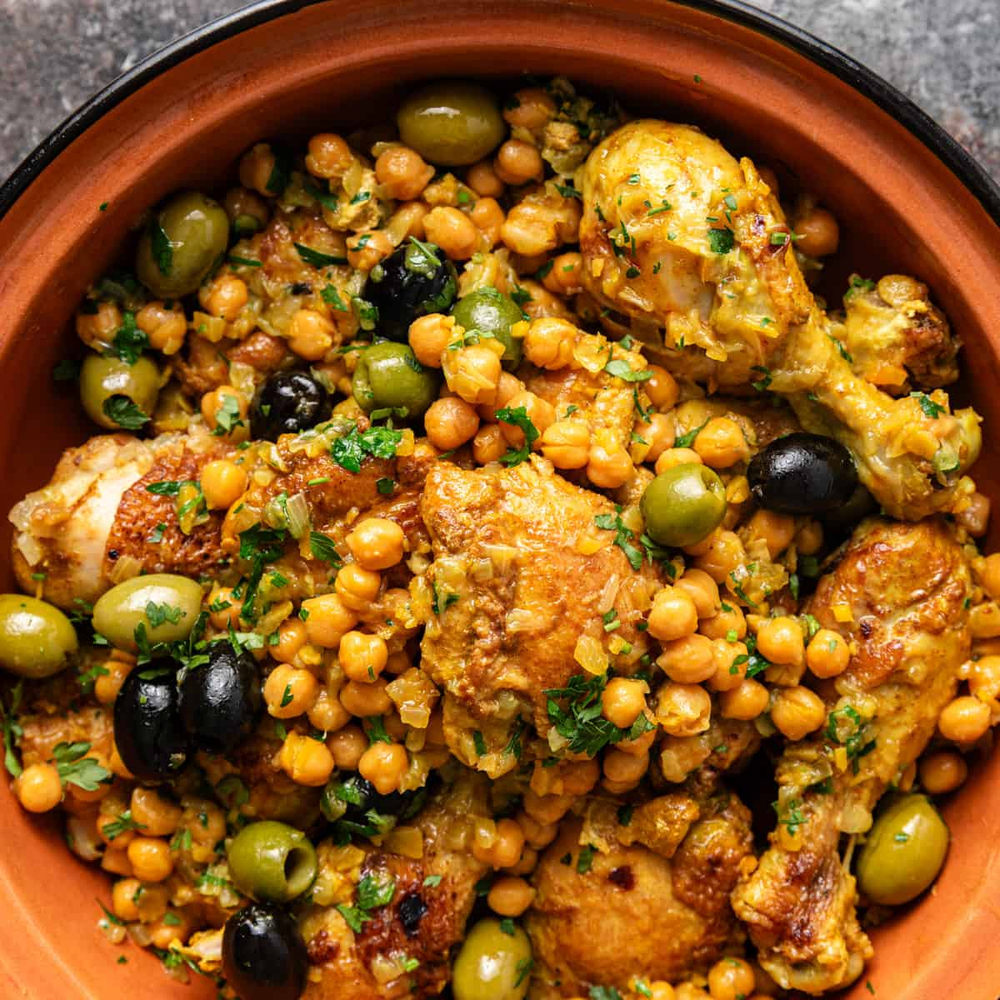

African Section

| Fufu and Egusi Soup | Bunny Chow | Tagine | Samaki Wa Kupaka |
| Fufu is a staple food in West and Central Africa, made from boiled and mashed starchy vegetables such as cassava, plantains, or yams. It's typically served with egusi soup, a rich and flavorful stew made with ground melon seeds, vegetables, and sometimes meat or fish, creating a comforting and nourishing meal. | A South African street food specialty originating from Durban, bunny chow consists of a hollowed-out loaf of bread filled with a spicy curry made with meat, vegetables, or beans, creating a portable and flavorful meal that's perfect for on-the-go eating. | A slow-cooked stew originating from North Africa, typically made with tender meat (such as lamb or chicken), vegetables, dried fruits, and aromatic spices, cooked in a traditional clay pot called a tagine, resulting in a meltingly tender and fragrant dish. | Samaki wa kupaka, which translates to "coconut fish curry" in Swahili, is a popular dish in coastal regions of East Africa. It consists of fish (such as tilapia or snapper) marinated in a mixture of coconut milk, spices, and herbs, then grilled or baked until tender and flavorful. |
 |
 |
 |  |